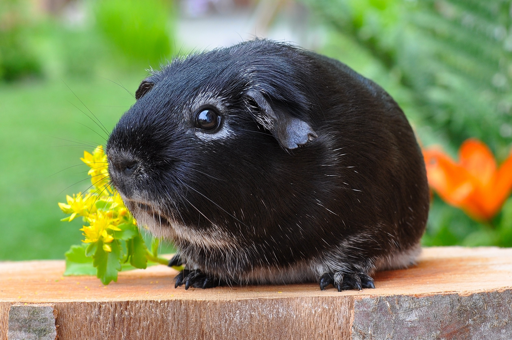

- Świnki krótkowłose
- Amerykańska (American)
- Rozetka (Abyssinian)
- Czubatka (Crested)
- Czubatka biała (American Crested)
- Misia (Teddy)
- Królewia (Rex)
- Grzbietka (Ridgeback)
- Grzbietka czubata (Crested Ridgeback)
- Kędzierzawa (Curly)
- Świnki bezwłose
- Mizerotka (Skinny)
- Balwin (Baldwin)
- Świnki długowłose
- Peruwianka (Peruvian)
- Alpaka (Boucle)
- Jedwabia (Sheltie)
- Królewia jedwabia (Texel)
- Czubatka królewia (Coronet)
- Czubatka kędzierzawa (Merino)
- Angorka (Angora)
Amerykańska (American)

Świnka ma krótkie, gładkie i przylegające do ciała futerko. Występuje niemal
w dwudziestu kolorach. Długość włosia wynosi ok. 18mm. Widziana z góry ma tułów mniej więcej
równej szerokości, a głowę zakończoną okrągłym noskiem. Jest największą, najstarszą i najbardziej
znaną rasą, która pojawiła się w Europie już w XVI wieku. Znana, ze swojego przyjaznego usposobienia,
dobrze dogaduje sie z innymi świnkami. Jest dosyć łatwa w hodowli, ponieważ sama potrafi zadbać o swoje futro.